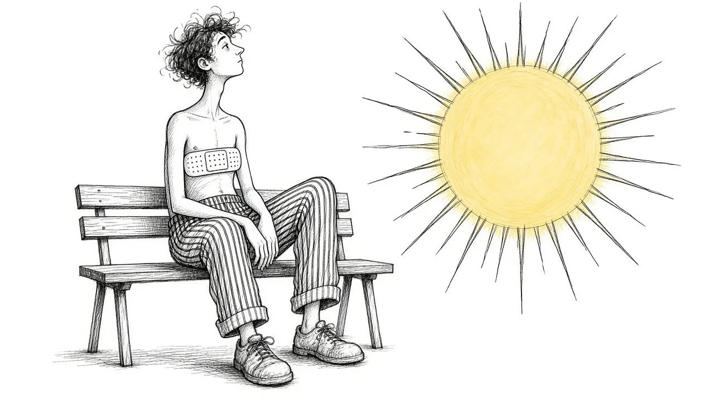
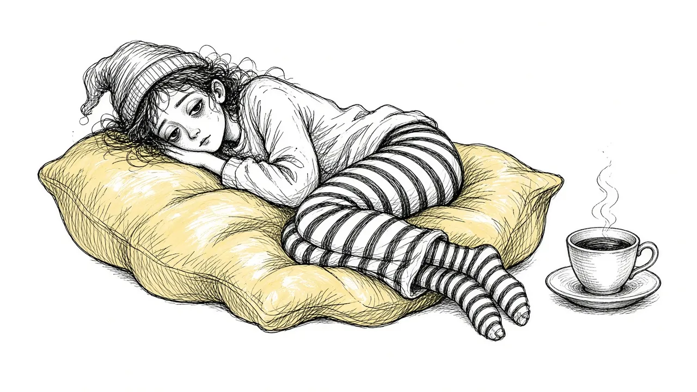
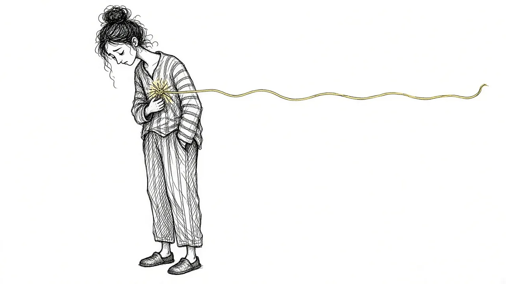

Grief Basics
What grief is, how it behaves, and why it does what it does.

Grief Alongside Depression and Anxiety
Grief often arrives alongside other mental health challenges. How to recognize overlap and get support for all of it.

Why Your Brain Keeps Replaying Their Last Days
Memories of the final days or moments can loop relentlessly. Here is why that happens and how to let the rest of their life back in.

Rumination in Grief: Getting Off the "What If" Wheel
Endless what-ifs and if-onlys can trap grieving people. Learn why rumination happens and gentle ways to step off the wheel.

Grief Waves: Why It Comes Back and How to Ride It Out
Just when things feel steadier, a wave of grief hits. Why grief comes in waves and practical ways to get through them.

How Long Does Grief Last? An Honest Timeline
There is no deadline for grief, but there are common patterns. An honest look at how grief tends to change over months and years.

Will It Ever Stop Hurting? An Honest Answer
Grieving people often want to know if the pain will end. Here is an honest, hopeful answer about how grief changes over time.

The Hidden Side of Grief: What Happens Inside When No One Sees
Much of grief happens silently: replaying, bargaining, searching. A look at the invisible work of grieving and how to support it.

Is It Grief or Something More? Understanding Prolonged Grief
Prolonged grief disorder is a recognized condition where grief stays intense and impairing for a long time. Learn the signs and options.

Grief vs. Depression: What's the Difference?
Grief and depression share symptoms but are not the same. Learn how they differ and when grief may have turned into depression.

Grief vs. Sadness: When Grief Is More Than a Bad Week
People use grief and sadness interchangeably, but they are different. Here is how they differ and why it matters.

Grief Across the Lifespan: How Children, Teens, and Adults Grieve
Grief looks different at five, fifteen, and fifty. A guide to how age shapes grief and how to support grievers of every age.

The Physical Side of Grief: What It Does to Your Body
Grief can cause exhaustion, aches, illness, and sleep problems. Learn the physical symptoms of grief and how to care for your body while grieving.

Why Grief Hurts So Much: The Science of Attachment and Loss
Grief is rooted in attachment, one of the brain's deepest systems. Here is what science says about why losing someone hurts this much.

Why Your Grief Keeps Changing Shape
One month it is anger, the next it is guilt, then numbness. Why grief shifts its focus, and how to stop feeling like you are starting over.

Why Grief Can Feel Worse in the Second Year
Many people expect grief to ease after a year and are blindsided when it gets harder. Here is why the second year can hurt, and how to cope.

Why "Just Move On" Doesn't Work
Being told to move on can make grief worse. Here is the psychology behind why grief cannot be willed away, and what to do instead.

Why Grief Doesn't Need a Cure
Grief is not a disease to be fixed. Understanding it as love that continues can change how you carry it.

Grief Myths: What People Get Wrong About Loss
From the five stages to the one-year rule, common grief myths can make mourning harder. Here is what is actually true.

Intrusive Memories After a Death: Why Pushing Them Away Backfires
Painful images and memories of a loss can arrive uninvited. Here is why suppressing them tends to make them louder, and what helps instead.

Grief Symptoms: More Than Just Crying
Grief affects your body, mind, sleep, memory, and relationships. A guide to the symptoms people rarely warn you about.

What Is Grief? A Plain Guide to the Most Human Experience
Grief is not a problem to solve or a stage to pass. Here is what it actually is, why it feels the way it does, and what helps.
You do not have to carry it alone.
Start with a gentle, free check-in. A few quiet questions about how grief is showing up for you right now.
Take the Free Grief Check-In